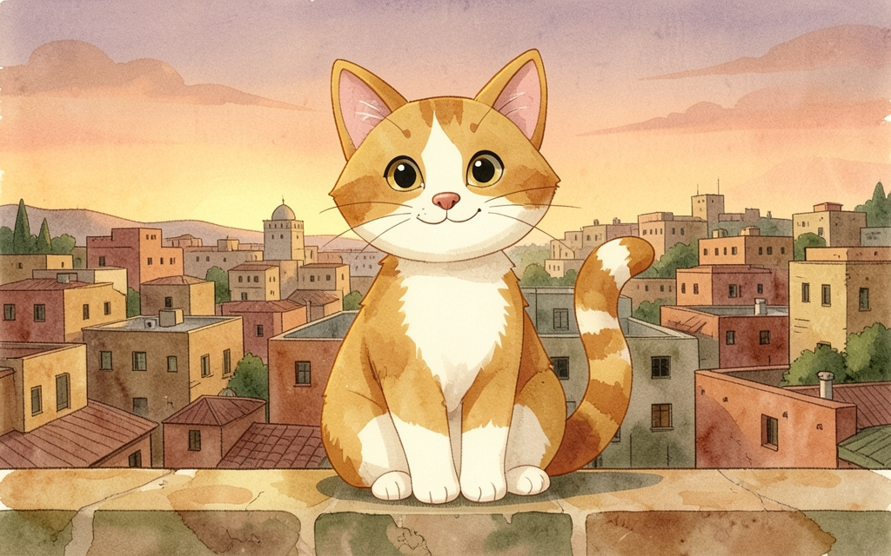
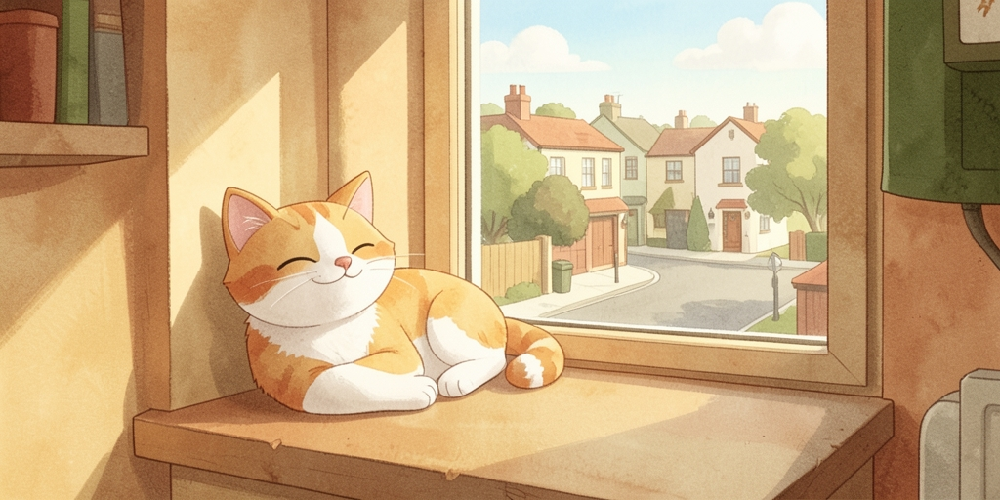
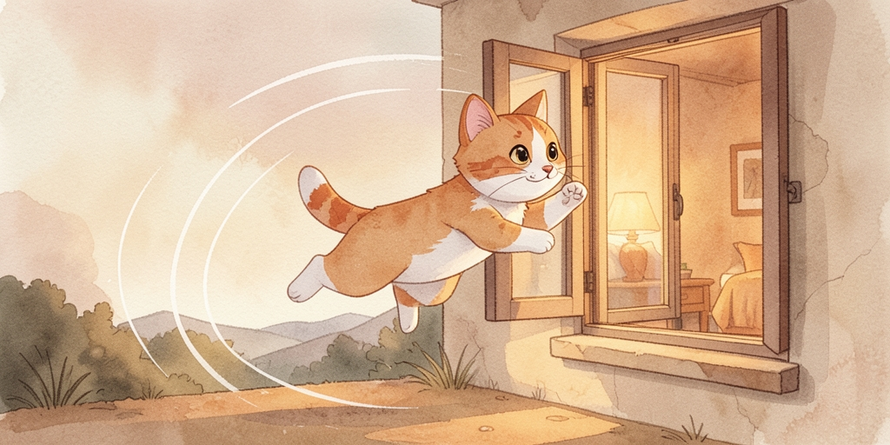
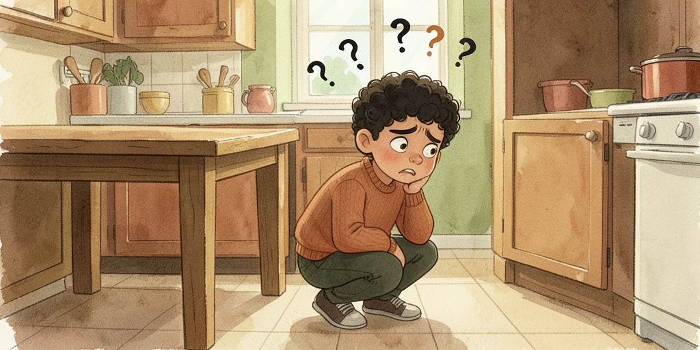
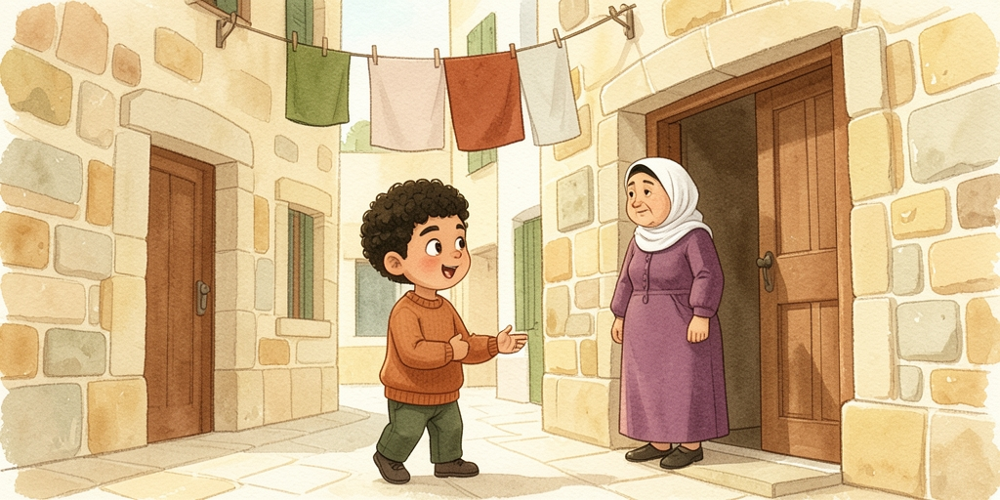
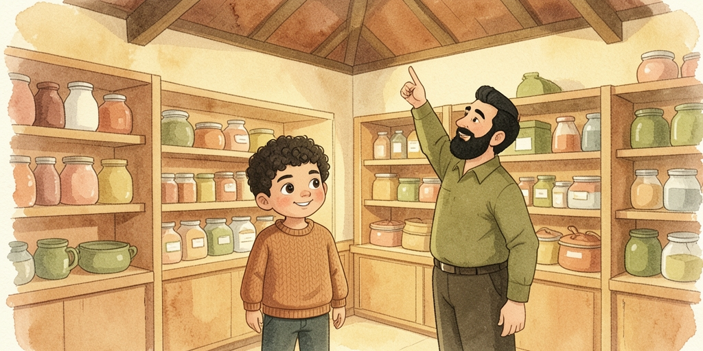
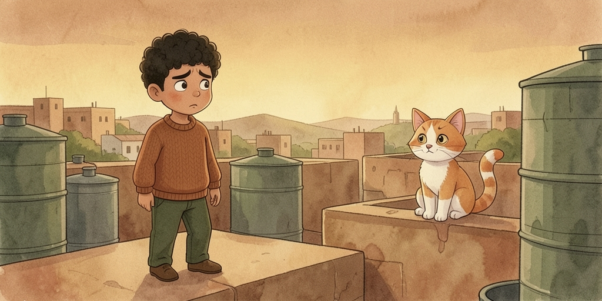
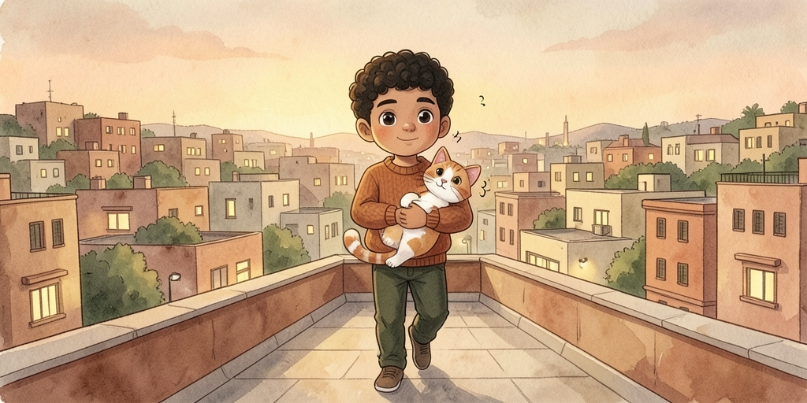

Same system as book 1: Arabic first, then the Jerusalem pronunciation, then English. This story is built around asking questions — the words on this page are the ones you will use every single day.
| Palestinian | Fus7a | ||
|---|---|---|---|
| شو | ماذا | shou | what |
| مين | من | meen | who |
| وين | أين | ween | where |
| ليش | لماذا | leesh | why |
| إمتى | متى | eemta | when |
| كيف | كيف | keef | how (same word, but كيفك keefak = how are you) |
| قديش | كم | 2addeesh | how much / how many |
| أي | أي | ayy | which |

عند سامي قطة اسمها مشمش.
لونها أبيض وبرتقالي.
مشمش بتحب تنام عالشباك وتتفرج عالناس.
Sami has a cat called Mishmish (“Apricot”). She's white and orange. Mishmish likes sleeping on the window and watching the people go by.

يوم من الأيام، الشباك كان مفتوح.
مشمش قامت، مطت حالها، ونطت برا!
One day, the window was open. Mishmish got up, had a good stretch, and jumped outside!

سامي رجع من المدرسة ونادى:
«مشمش! مشمش! وينك؟»
دور تحت الطاولة... ما في.
دور جوا الخزانة... ولا إشي.
Sami came home from school and called out: “Mishmish! Mishmish! Where are you?” He searched under the table... nothing. He searched inside the cupboard... nothing at all.

نزل عالشارع وسأل الجيران:
«لو سمحتي يا خالة، شفتي قطة بيضا وبرتقالي؟»
«لأ يا حبيبي، ما شفتها. بس جرب عند الدكانة.»
He went down to the street and asked the neighbours: “Excuse me, auntie, have you seen a white and orange cat?” “No, love, I haven't seen her. But try at the shop.”

راح عند الدكانة. صاحب الدكانة قله:
«في قطة صغيرة قاعدة فوق عالسطح من الصبح.
وعم بتموء كتير.»
He went to the shop. The shopkeeper said to him: “There's a little cat sitting up on the roof since this morning. And she's meowing a lot.”

سامي طلع عالسطح، وشو شاف؟
مشمش قاعدة عالحيط، وحدها، وخايفة تنزل.
Sami went up to the roof, and what did he see? Mishmish sitting on the wall, all by herself, too scared to come down.

«تعالي يا مشمش، ما تخافي، أنا هون.»
حملها ونزل، وهي عم تخرخر عالطريق.
ومن هديك اليوم، سامي بيسكر الشباك قبل ما يروح عالمدرسة.
“Come here, Mishmish, don't be scared, I'm here.” He picked her up and carried her down, and she purred the whole way. And from that day on, Sami shuts the window before he leaves for school.
Everyday Jerusalem vocabulary. Nothing here is book Arabic.
| عند سامي | 3ind Saami | Sami has (there is no verb "to have") |
| قطة | 2atta | cat · pl. قطط 2tat |
| اسمها | ismha | her name is · اسمه ismo his name is |
| لونها | lonha | her/its colour |
| بتحب تنام | bit7ibb tnaam | she likes to sleep (2nd verb with no أن) |
| الشباك | ish-shibbaak | the window · pl. شبابيك shababeek |
| تتفرج على | titfarraj 3ala | to watch, to look at |
| يوم من الأيام | yom min il-ayyaam | one day (story opener) |
| مفتوح | maftou7 | open · مسكر msakkar shut |
| قامت | 2aamat | she got up |
| مطت حالها | mattat 7aalha | she stretched (lit. stretched herself) |
| نطت | nattat | she jumped · نط natt to jump |
| برا | barra | outside · جوا juwwa inside |
| نادى | naada | he called out |
| وينك؟ | weenek? | where are you? (f.) · m. وينك weenak |
| دور | dawwar | he searched · دور على dawwar 3ala look for |
| تحت | ta7t | under · فوق fo2 above |
| الطاولة | it-taawle | the table |
| الخزانة | il-5zaane | the cupboard, the wardrobe |
| ولا إشي | wala ishi | nothing at all · إشي ishi thing |
| الجيران | ij-jeeraan | the neighbours · sg. جار jaar |
| يا خالة | ya 5aale | "auntie" — polite for any older woman |
| شفتي؟ | shufti? | did you see? (f.) · m. شفت shuft |
| بيضا | beeda | white (f.) · m. أبيض abyad |
| لأ | la2 | no · أه / إيه ah / eeh yes |
| يا حبيبي | ya 7abeebi | "love", "dear" — used constantly, to anyone |
| بس | bass | but · also "only", "enough" |
| جرب | jarrib | try! · جرب jarrab he tried |
| الدكانة | id-dukkaane | the corner shop |
| صاحب الدكانة | saa7ib id-dukkaane | the shopkeeper · صاحب owner, friend |
| قله | 2allo | he said to him · قلها 2alha to her |
| قاعدة | 2aa3de | sitting (f.) · قاعد 2aa3ed (m.) |
| السطح | is-sat7 | the roof — where everyone hangs washing |
| من الصبح | min is-sob7 | since the morning |
| بتموء | btmoo2 | she meows |
| الحيط | il-7eet | the wall · pl. حيطان 7eetaan |
| وحدها | wa7adha | by herself · لحالي la-7aali by myself |
| خايفة | 5aayfe | afraid (f.) · خايف 5aayef (m.) |
| ما تخافي | maa t5aafi | don't be afraid (f.) · m. ما تخاف maa t5aaf |
| هون | hoon | here · هناك hnaak there |
| حملها | 7amalha | he carried her |
| عم تخرخر | 3am t5ar5er | she's purring |
| من هديك اليوم | min hadeek il-yom | from that day on |
| بيسكر | bisakker | he closes · بيفتح byifta7 he opens |
| قبل ما | 2abel ma | before (+ verb) · بعد ما ba3ed ma after |
Three things this story quietly drilled into you.
You use عند 3ind plus a pronoun ending:
عندي 3indi I have · عندك 3indak / 3indek you have (m./f.) ·
عندو 3indo he has · عندها 3indha she has ·
عنا 3inna we have · عندهم 3indhom they have.
Negative: ما عندي maa 3indi — I don't have.
The same little endings mark possession on a noun and the object on a verb. Learn them once and they work everywhere.
| ـي | -i | my / me — اسمي ismi my name |
| ـك | -ak (m.) / -ek (f.) | your / you — وينك weenak, weenek |
| ـه | -o | his / him — قله 2allo he told him |
| ـها | -ha | her — حملها 7amalha he carried her |
| ـنا | -na | our / us — جبلنا jiblna bring us |
| ـكم | -kom | your / you (pl.) — بيتكم beetkom your house |
| ـهم | -hom | their / them — خدهم 5idhom take them |
The imperative is short and blunt, and you soften it with لو سمحت or by adding
يا plus a name.
روح / روحي / روحوا rou7 / rou7i / rou7u — go (m. / f. / pl.)
تعال / تعالي / تعالوا ta3aal / ta3aali / ta3aalu — come
شوف / شوفي / شوفوا shouf / shoufi / shoufu — look
Negative commands use ما plus the present, no بـ:
ما تخاف maa t5aaf don't be afraid · ما تنسى maa tinsa don't forget.
| وينك؟ | weenak? | where are you? |
| شو صار؟ | shou saar? | what happened? |
| ما بعرف | maa ba3ref | I don't know |
| لحظة | la7za | one second |
| ولا يهمك | wala yhimmak | no worries, don't mention it |